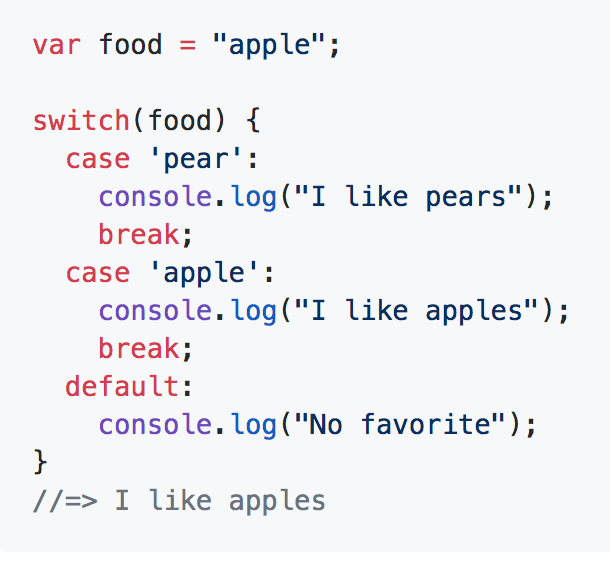

What's a data type and how does it relate to variables?
How to use variables (declaring, updating, etc.)
Creating Arrays and accessing values
Iterate over and manipulate values in an array
-Use if/else conditionals to control program flow based on Boolean (true or false) tests
-Use Boolean logic (!, &&, ||) to combine and manipulate conditional tests
-Use switch/case conditionals to control program flow based on matching explicit values
-Differentiate among true, false, 'truth-y', and 'false-y'
-Review loop iteration using for and forEach, and introduce while and do/while loops
Conditional statements are blocks of code that only run when a certain criteria is met
JavaScript supports two conditional statements: if...else and switch
If...
if (1 > 0) {
console.log("This is a true statement");
}
If... else
if (0 > 1) {
console.log("This is a true statement");
}
else {
console.log("The first statement did not run");
}
If... else if... else
if (name === 'Harry') {
console.log("You're a wizard");
}
else if (name === 'Hedwig') {
console.log("You're an owl");
}
else {
console.log("Why are you in Hogwarts?");
}
Ternary Operators
let age = 12;let allowed = (age > 18) ? "yes" : "no";allowed would result in "no"(condition) ? ___ : ___Greater than, less than
1 < 3 is true"b" > "a" is true12 > "12" is false12 >= "12" is trueEqual signs
= is used when assigning a value like we've done in the past== is used as a check, but it does not check type=== checks type5 == '5' is true 5 === '5' is false1's and 0's
1 == true is true0 == false is true1 === true is false, howeverWhat About Objs and Arrays?
{} === {} is false[1, 2] === [1, 2] is falseExclamations are 'Not'
1 !== 2 reads '1 is not equal to 2'!!1 is true!![] is true!!{} is true!!null is false!!"" is falseThere are two Binary Operators that can make more complex boolean logic
if (age > 12 && age < 20) : the && denotes ANDif (day === "Monday" || day === "Wednesday") : the || denotes OR!(true) : we can still use exclamation points here as negationWrite program that outputs results based on age
Switch statements are like If statements, but may be more aesthetically appealing
if (food === 'pear')Fall Through Method
let grade = 'C';
switch (grade) {
case 'A':
case 'B':
case 'C':
console.log('You passed!')
break
case 'D':
case 'F':
console.log('You failed')
break
default:
console.log('Unexpected grade value')
}
While is a loop statement that will run while a condition is true
while (true) {
// an infinite loop!
}
while loops. Infinite loops will break your codeA way to counter this is with a do-while loop
let input = 0;
do {
console.log(input++);
} while (input < 10)
We touched the for and forEach loops already, but here's a refresher
The for loop
let a = [1, 2, 3, 4, 5];
for (var i = 0; i < a.length; i++) {
console.log(i);
}
The forEach loop (ES6)
["sunny", "rainy", "windy"].forEach(function(currentValue, index, array) {
console.log("The current weather is ", currentValue);
});
currentValue can also be array[index]You've learned about if/else, switch, forEach, etc.
Now is your chance to put it to practice
FizzBuzz assignmentHW #1
HW #2
['new york', 'texas', 'florida'...]node random-address.js10 E 21st St, New York, NY 10010Q&A
Exit Ticket